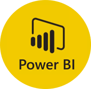
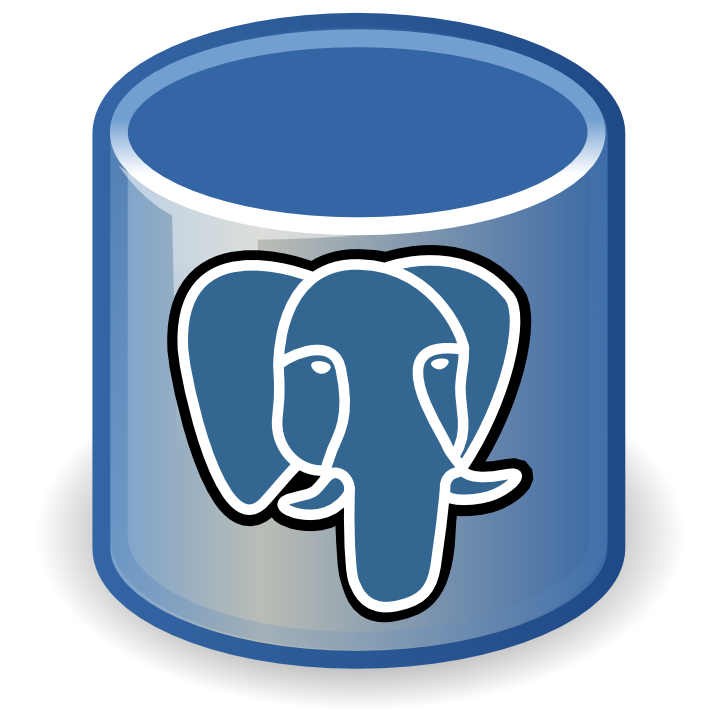
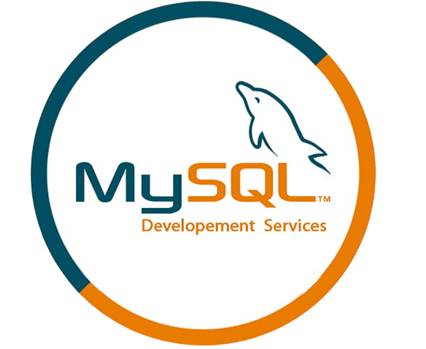

Projetos Selecionados



Indicadores financeiros de valuation, risco, retorno e crescimento das principais instituições financeiras do Brasil. Dados do BCB, CVM e relatórios de RI tratados com Python e SQL Server.


Construção e consolidação de base de dados a partir do IFDATA (BCB) e da CVM, com foco em extração, limpeza e tratamento de dados das instituições financeiras brasileiras listadas em bolsa.

Análise aprofundada do sistema tributário brasileiro, seus impactos econômicos e o processo de transição após a Reforma Tributária. Efeitos sobre empresas, planejamento fiscal e perspectivas macroeconômicas.
Repositório de scripts Python para automação de coleta, tratamento e análise de dados econômicos e financeiros. Em desenvolvimento.
Coletânea de relatórios, estudos e projetos diversos desenvolvidos ao longo da trajetória profissional nas áreas de economia, finanças e análise de dados. Em desenvolvimento.